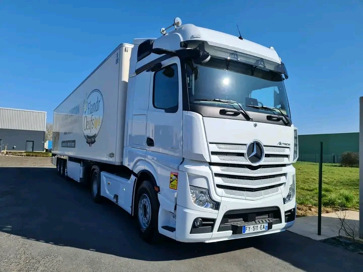

Opportunité unique pour les conducteurs professionnels ! Travail stable, bon salaire, logement fourni et un avenir meilleur

Pour travailler en Allemagne comme chauffeur de camion, le niveau de langue allemand demandé peut varier
selon l'employeur et la région, mais généralement:
Diplome/certifications en langue allemande utiles avant la demande de visa :
Goethe-zertifikat A1 ou B2 : Ces niveaux sont souvent recommandeés car ils montrent que vous avez
une comprehension de base àintermédiaire de l'allemand ,
suffisant pour la communication quotidienne et professionnelle.
Telc Deutsch: Très reconnu en Allemagne, ce diplôme prouve un niveau B1 en allemand, souvent
exigé pour ses exemples nécessitant un contact avec d'autres
personnes ou clients.
En tant que chauffeur poids lourd, vous devez pouvoir comprendre
des consignes de sécurité, communiquer avec des collègues, des clients,
la police, ou cas d'incident
Un niveau B1 est souvent demandé pour
les visas de travail dans des professions
nécessitant une interaction moyenne avec l'environnement professionnel.
Centre officiel du Goethe-Institut à Madagascar proposant des cours certifiés du niveau A1 à C2 :
Avoir au minimum un niveau A1/B1 en Allemand via un dilpôme reconnu comme le Goethe-Zerifikat (CGM) ou le telc est un plus très apprécié,voire requis.cela facilite la procédure de visa et l'integration professionnelle.
Nous sommes une agence spécialisée dans le recrutement international pour le secteur du transport en Allemagne. Nous collaborons avec des entreprises allemandes à la recherche de chauffeurs professionnels venant d'Afrique, du Maghreb, et d'autres pays. Notre objectif est de faciliter l'intégration des candidats et de leur offrir des conditions de travail équitables et respectueuses.
: +261 38 80 659 26
: Fabien Mihajason